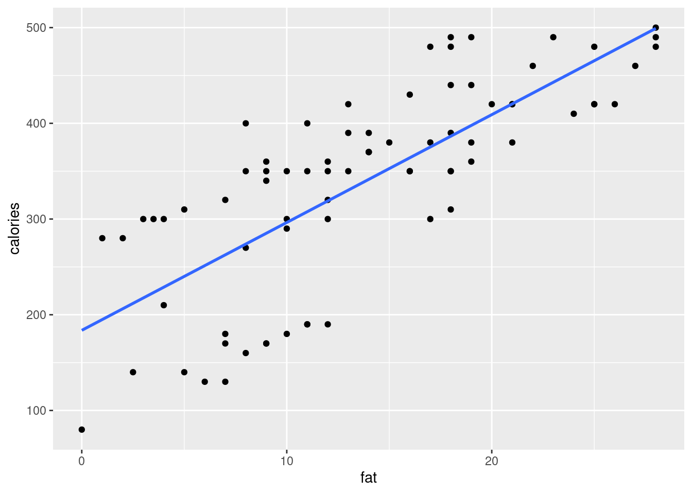
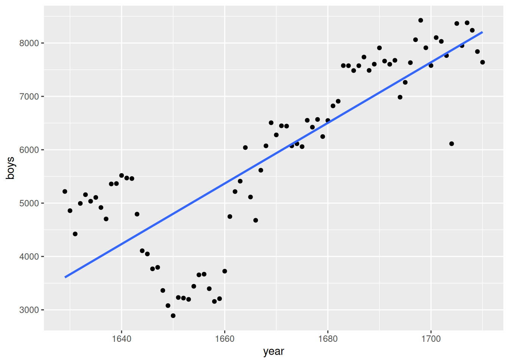
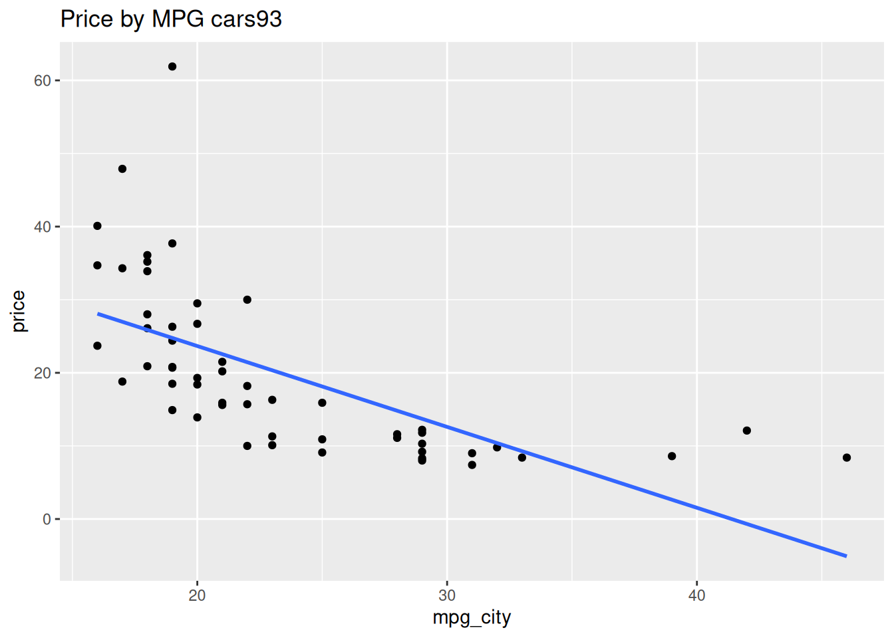
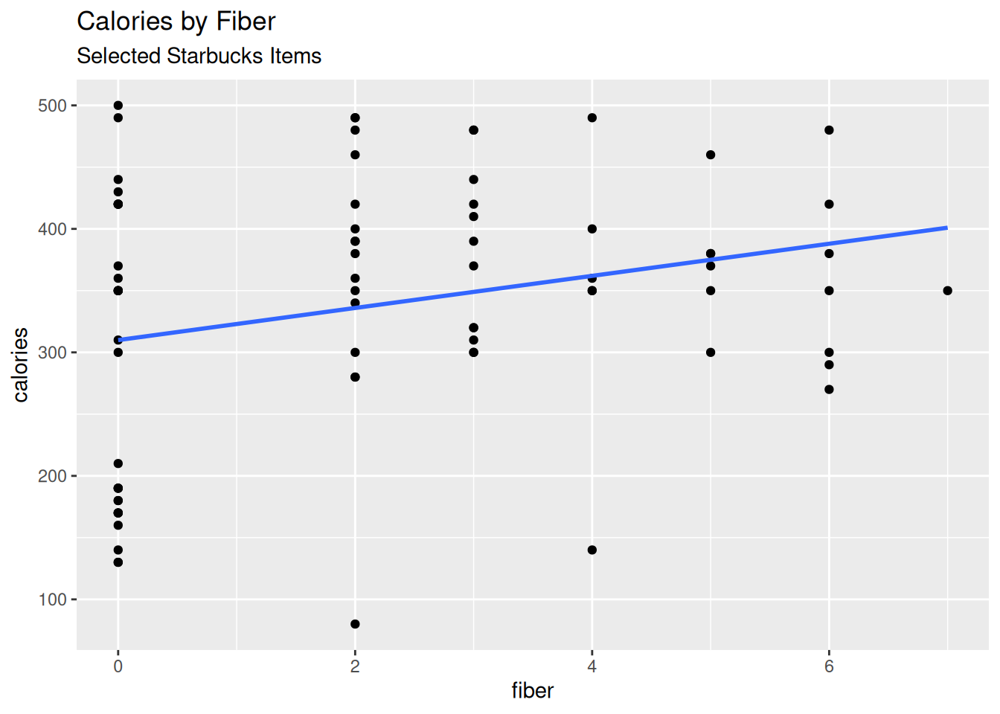
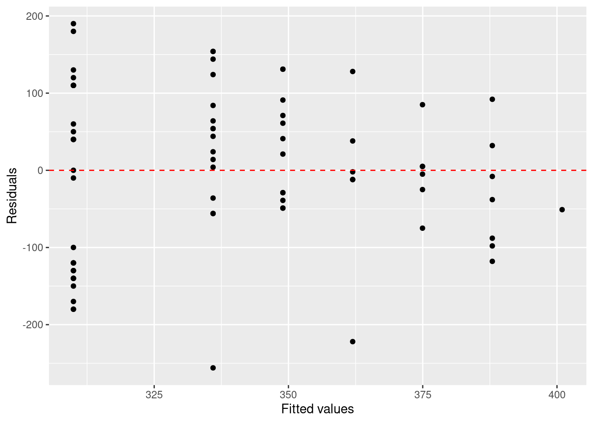
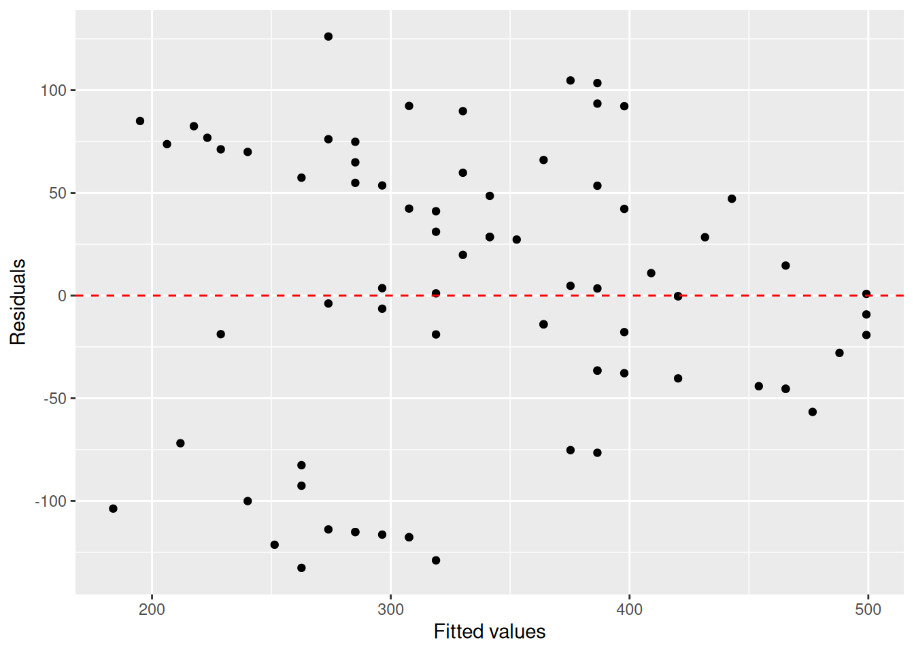
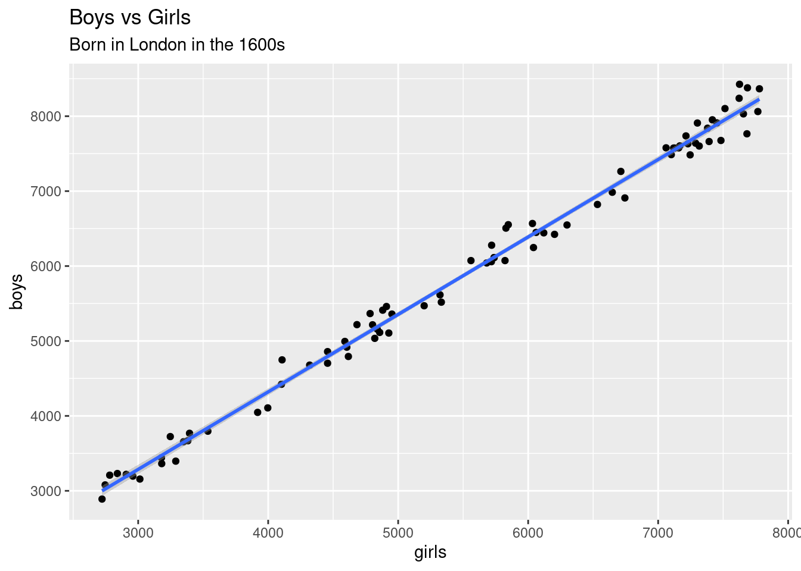
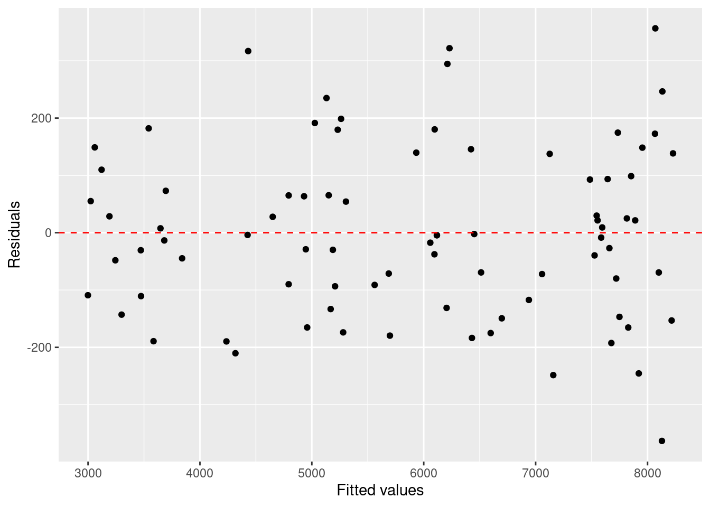

── Conflicts ────────────────────────────────────────── tidyverse_conflicts() ──
✖ dplyr::filter() masks stats::filter()
✖ dplyr::lag() masks stats::lag()
ℹ Use the conflicted package (<http://conflicted.r-lib.org/>) to force all conflicts to become errors
library(broom)library(statsr)
Loading required package: BayesFactor
Loading required package: coda
Loading required package: Matrix
Attaching package: 'Matrix'
The following objects are masked from 'package:tidyr':
expand, pack, unpack
************
Welcome to BayesFactor 0.9.12-4.7. If you have questions, please contact Richard Morey (richarddmorey@gmail.com).
Type BFManual() to open the manual.
************
Attaching package: 'statsr'
The following objects are masked from 'package:openintro':
calc_streak, evals, nycflights, present
library(kableExtra)
Attaching package: 'kableExtra'
The following object is masked from 'package:dplyr':
group_rows
starbucks |>ggplot(aes(x=fat, y= calories))+geom_point()+geom_smooth(method ="lm", se =FALSE)
`geom_smooth()` using formula = 'y ~ x'

Model outputs: tidy
#tidy() give the regression outputtidy(star_model) |>kable()
term
estimate
std.error
statistic
p.value
(Intercept)
183.73375
17.277012
10.63458
0
fat
11.26651
1.117087
10.08562
0
summary()
summary(star_model)
Call:
lm(formula = calories ~ fat, data = starbucks)
Residuals:
Min 1Q Median 3Q Max
-132.599 -44.130 3.469 54.868 126.134
Coefficients:
Estimate Std. Error t value Pr(>|t|)
(Intercept) 183.734 17.277 10.63 < 2e-16 ***
fat 11.267 1.117 10.09 1.32e-15 ***
---
Signif. codes: 0 '***' 0.001 '**' 0.01 '*' 0.05 '.' 0.1 ' ' 1
Residual standard error: 69.1 on 75 degrees of freedom
Multiple R-squared: 0.5756, Adjusted R-squared: 0.5699
F-statistic: 101.7 on 1 and 75 DF, p-value: 1.32e-15
Are residuals normalish?
star_model_aug <-augment(star_model)ggplot(data = star_model_aug, aes(x = .fitted, y = .resid)) +geom_point() +geom_hline(yintercept =0, linetype ="dashed", color ="red") +xlab("Fitted values") +ylab("Residuals")

What were we doing?
Make a model
Trying to figure out if the model is reasonable
looking at the correlation coefficent r.
What will we do today?
A hypothesis test to see if the slope is a number other than zero.
recall: \(y= \beta_0 + \beta_1 x\)
\(\beta_1\) is the slope.
If the slope is zero there is no relationship between y and x.
Conditions:
Linearity* data has to be linear
Data has to be independent
watch out for time series.
nearly normal residuals
look for random disbursment around the zero line of residual plot.
constant or equal variability
the points in the residual plot should not have a distinct/changing pattern.
The book gives the acronym of LINE.
Some examples:
Independence problems
arbuthnot |>ggplot(aes(year,boys))+geom_point() +geom_smooth(method ="lm" , se =FALSE)
`geom_smooth()` using formula = 'y ~ x'

Linear Problems

Normal issues
Normal issues again

Starbucks calories vs fat.
starbucks |>ggplot(aes(x=fat, y= calories))+geom_point()+geom_smooth(method ="lm", se =FALSE)
`geom_smooth()` using formula = 'y ~ x'

Residuals

What about this?
arbuthnot |>ggplot(aes(x = girls, y = boys))+geom_point()+labs(title ="Boys vs Girls",subtitle ="Born in London in the 1600s")+geom_smooth(method ="lm")
`geom_smooth()` using formula = 'y ~ x'
Residuals girl vs boy births

Let’s do a test
Recall
\[
y=\beta_0+\beta_1 x + e
\]
\(\beta_0\) = intercept
\(\beta_1\) = slope
x is the predictor variable
y is the response variable
e is the error
Relationship between variable x and y?
If there is no relationship the slope is 0
If there is a relationship the slope is not zero.
We do
\[
H_0: \beta_1 = 0 \\
H_1: \beta_1 \ne 0
\]
(We could do other tests on r - the correlation coefficient or \(\beta_0\) )
The t distribution
The distribution of the slopes of an infinite number of samples would be a student t.
So we are doing a t test with this test statistic:
\(T = \frac{\hat{\beta}_1-0} {\text{SE}}\)
df= n-2
We’ll let R calculate \(SE\) and \(\hat{\beta_1}\).
\(r^2\) is the proportion of the variability that can be explained by the explanatory variable
Practice Problem
The diamonds data set in R contains the prices and other attributes of almost 54,000 diamonds. We want to see if carat (weight of the diamond) is a good predictor for price (in US dollars).
Write the hypotheses.
Check the conditions and comment on any potential violations.